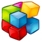
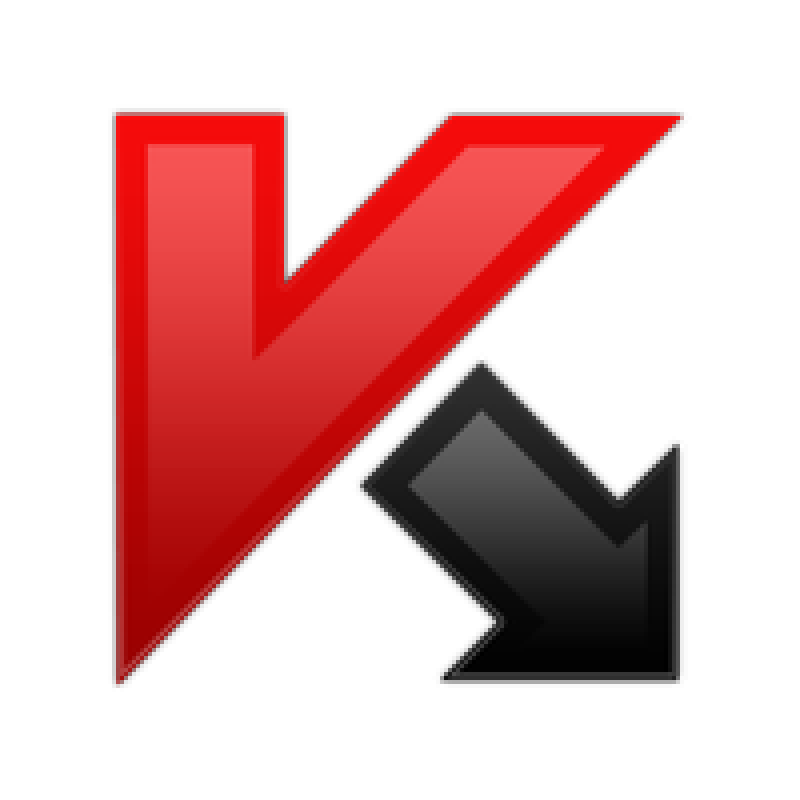
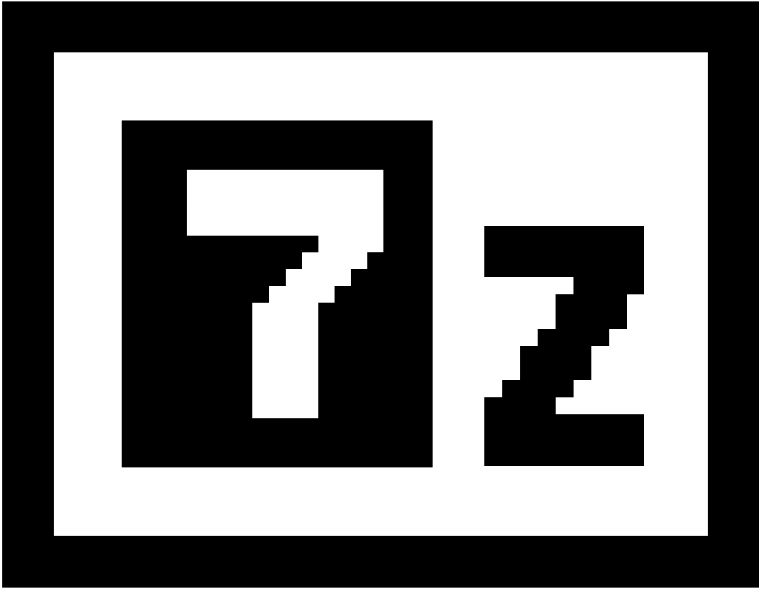
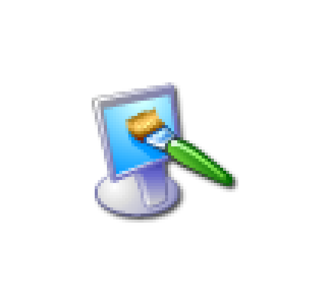
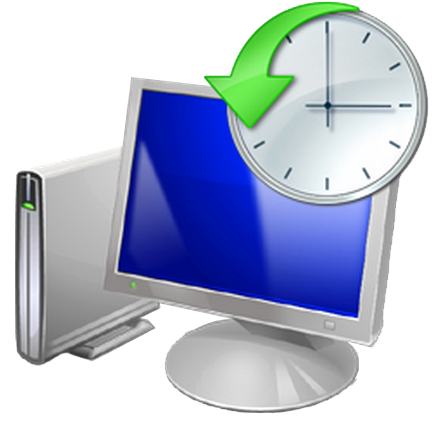
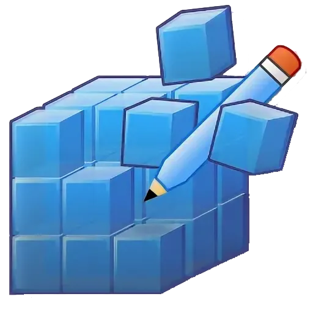

Утилиты
Руководства
Исправления
Ссылки
Скрипты
Полезные утилиты для Windows XP
CCleaner

Defraggler

Антивирус

7-Zip
Руководства по Windows XP
Исправление распространенных проблем
Полезные ссылки
Полезные скрипты для Windows XP

Очистка временных файлов

Восстановление системных файлов

Оптимизация реестра
Настройка сети
Резервное копирование